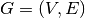
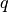
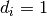
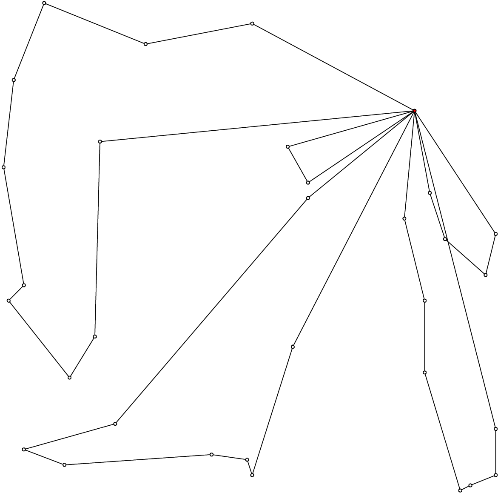

10.1. The Vehicle Routing Problem (VRP)
In this section, we briefly present one of the basic versions of the Vehicle Routing Problem. Most of the time, there are additional constraints[1]. This basic version is very little studied in the scientific literature and in this manual we use it as a gentle introduction to the CVRP.
The usual format to encode CVRP instances is from the TSPLIB. There is no TSPLIB format for the basic VRP, so we simply read CVRP and forget about the demands of the CVRP instances to solve a basic version of the VRP.
We can reuse our TSPLIBReader class as it also manages to read CVRP instances. We use again the excellent ePiX library through our CVRPEpixData class to visualize CVRP instances and their solutions.
| [1] | This basic version of the VRP is better known under the name mTSP or the Multiple TSP. We refer the reader to [Bektas2006] for more. |
| [Bektas2006] | (1, 2) T. Bektas. The multiple traveling salesman problem: an overview of formulations and solution procedures, Omega, Elsevier, v. 34(3), pp 209-219, 2006. |
We didn’t program specialized VRP classes. Instead we’ll use and present more general CVRP classes.
10.1.1. The Problem
Given a graph  and pairwise distances between nodes, the VRP consists in finding one or several routes to visit each node once. Each tour starts and ends at the same depot. The cost of a tour is given by the sum of the distances along the route and the total cost of a feasible solution for the VRP is the sum of the costs of all tours.
This “definition” remains vague enough to encompass the most known variants of the VRP. Indeed, not only does the VRP exist in different flavors (capacitated, multi-depots, with time-windows, with pick-up and delivery, ...) but several slightly different definitions exist in the literature. In particular, some instances fix - in a way or another - the number of vehicles to be used and a total travelled distance limit is imposed on the vehicles.
In this manual, we will use the definition given by Gilbert Laporte in [Laporte1992]. In this article, a VRP is designed in such a way that
- there is only one depot and each vehicle route starts and ends at this depot;
- each node - except the depot - has to be visited (or serviced) exactly once by exactly one vehicle;
- the fleet of vehicles is homogeneous, i.e. the cost to travel an arc is the same for all the vehicles;
- the number of vehicles can be fixed, bounded or free;
- the distances between two nodes don’t need to be equal;
- the objective function is the sum of the arcs traversed by all vehicles that service at least one node with no additional cost for each used vehicle.
- some side constraints are satisfied.
The last point is important. Indeed, without side constraints and if the graph obeys the triangle inequality
(i.e.  ), then there is no need to use more than one vehicle. For instance,
the solution with two vehicles in the next figure (left) costs more than the same solution where only one vehicle follows
the two routes one after the other (right):
), then there is no need to use more than one vehicle. For instance,
the solution with two vehicles in the next figure (left) costs more than the same solution where only one vehicle follows
the two routes one after the other (right):
As , the shortcut to go immediately from  to
to  without
passing by the depot
without
passing by the depot  costs less.
costs less.
The most common side constraints include:
- capacity restrictions: a non-negative weight (or demand) is attached to each city
 (except
the depot) and the sum of weights of any vehicle route may not exceed the vehicle capacity.
Capacity-constrained VRP are referred to as CVRP and will be studied in this chapter.
(except
the depot) and the sum of weights of any vehicle route may not exceed the vehicle capacity.
Capacity-constrained VRP are referred to as CVRP and will be studied in this chapter. - maximum number of cities that can be visited: the number of cities on any route is bounded above by .
This is a special case of CVRP with  for all except the depot and capacity equal to
for all vehicles.
- total time (or distance) restrictions: each route has its length bounded by a certain amount
 of time that
cannot be exceeded by each vehicle. Such VRP are often denoted as DVRP or distance-constrained VRP.
of time that
cannot be exceeded by each vehicle. Such VRP are often denoted as DVRP or distance-constrained VRP. - time-windows: each city must be serviced within a time-window
![[a_i, b_i]](../../_images/math/bc04bd6abf483862782136e613e9a11f028e0529.png) and waiting times are allowed.
and waiting times are allowed. - precedence relations between pair of cities: city
 cannot be visited before city . Among such problems
are the VRPPD: the Vehicle Routing Problems with Pickup and Delivery. A number of goods need to be moved from certain pickup
locations to other delivery locations.
cannot be visited before city . Among such problems
are the VRPPD: the Vehicle Routing Problems with Pickup and Delivery. A number of goods need to be moved from certain pickup
locations to other delivery locations.
And the list goes on.
For our basic version of the VRP, all vehicles must be used. This version of the VRP is better known as the mTSP[2]. Some problems can be coined as mTSP and we refer again the reader to [Bektas2006] to find some examples.
| [Laporte1992] | G. Laporte. The vehicle routing problem: An overview of exact and approximate algorithms, European Journal of Operational Research, v. 59(3), pp 345-358, 1992. |
| [2] | Not to be confused with the k-TSP where only  nodes/cities must be visited/serviced. nodes/cities must be visited/serviced. |
Below you’ll find a picture of a solution of a VRP with 32 cities and 5 vehicles (A-n32-k5) in the sub-section Visualization with ePix.
10.1.2. Benchmark data
Several known benchmark data sources are available on the internet. We refer you to three:
- The VRPLIB page;
- The NEO (Network and Emerging Optimization) page;
- The SYMPHONY VRP data page maintained by T. Ralphs.
Their instances are encoded in the TSPLIB format. We refer the reader to the sub-section The TSPLIB format for an introduction to this format.
10.1.2.1. The TSPLIB format for the CVRP
The VRP in the TSPLIB format are only CVRP, i.e. capacitated problems. We will ignore the demands on the nodes to solve our basic VRP. Don’t forget the TSPLIB convention to number the nodes starting at 1.
Warning
Nodes are numbered from 1 to n in the TSPLIB and we keep this convention in this chapter.
10.1.2.1.1. The instance file
Here is the file A-n32-k5.vrp:
NAME : A-n32-k5
COMMENT : (Augerat et al, Min no of trucks: 5, Optimal value: 784)
TYPE : CVRP
DIMENSION : 32
EDGE_WEIGHT_TYPE : EUC_2D
CAPACITY : 100
NODE_COORD_SECTION
1 82 76
2 96 44
3 50 5
4 49 8
...
DEMAND_SECTION
1 0
2 19
3 21
4 6
...
DEPOT_SECTION
1
-1
EOF
The type is CVRP and the capacity of the vehicles is specified after the keyword CAPACITY. The demands on the node are specified in a DEMAND_SECTION section. The TSPLIB format requires the depot to be listed in the the DEMAND_SECTION section and have a demand of 0. Note that there is no specification whatsoever on the number of vehicles.
If you use other instances, be careful that they fully comply to the TSPLIB format (or change the code).
10.1.2.1.2. The solution file
While there exists a TSPLIB format for the solutions of (C)VRP, it is seldom used. We’ll follow the trend and use the most commonly adopted format.
This is what the file opt-A-n32-k5 containing an optimal solution for the CVRP A-n32-k5 instance above looks like:
Route #1: 21 31 19 17 13 7 26
Route #2: 12 1 16 30
Route #3: 27 24
Route #4: 29 18 8 9 22 15 10 25 5 20
Route #5: 14 28 11 4 23 3 2 6
cost 784
Routes are numbered starting form 1 while the nodes in the solution file are numbered starting from... 0! Also, note that the depot is not listed.
Warning
Nodes are numbered from 0 in the solution files!
By default, we’ll use the same convention. A bool numbering_solution_nodes_from_zero flag allows to switch between a numbering starting from 0 or 1 in the solution file.
10.1.3. To read TSPLIB files
Our good old TSPLIBReader class defined in the header routing_common/tsplib_reader.h (see the sub-section Benchmark data) comes again to the rescue. It was designed to also deal with CVRP. You simply need to provide a filename to the constructor:
TSPLIBReader tsp_data_reader(instance_file);
10.1.4. To generate a random CVRP: the CVRPDataGenerator class
We have defined a basic CVRPDataGenerator class to generate CVRP random instances. Each generated instance has at least one CVRP feasible solution. An instance is created by first creating a random CVRP solution, i.e. several feasible tours are created. We then associate demands such that the capacity of each vehicle is respected. A CVRPDataGenerator needs an instance name and the total number of nodes, including the depot:
CVRPDataGenerator cvrp_data_generator(instance_name, instance_size);
A little program crvp_data_generator generates random instances of CVRP. You can invoke it as follows:
./cvrp_data_generator -instance_name=my_instance -instance_size=40
> my_instance_file.vrp
Several parameters scattered in different files are available as gflags:
| Flags | Types | Default | Description |
|---|---|---|---|
| instance_name | std::string | “” | Name of the instance. |
| instance_size | int32 | 0 | Number of nodes, including the depot. |
| instance_filename | std::string | “” | Filename to save the CVRP instance in TSPLIB format. |
| depot | int32 | 1 | Depot of the CVRP instance. Must be greater or equal to 1. |
| distance_file | std::string | “” | Matrix distance file. |
| deterministic_random_seed | bool | true | Use deterministic random seeds or not? |
| number_vehicles | int32 | 2 | Number of vehicles. |
| capacity | int64 | 100 | Capacity of all vehicles. |
| allow_zero_capacity | bool | true | Allow node with zero capacity? |
| width_size | int32 | 6 | Width size of fields in output. |
| x_max | int32 | 100 | Maximum x coordinate. |
| y_max | int32 | 100 | Maximum y coordinate. |
10.1.5. To hold and check a (C)VRP solution: the CVRPSolution class
To represent a (C)VRP solution, we have defined the CVRPSolution class. Two constructors are available:
CVRPSolution(const CVRPData & data, std::string filename);
CVRPSolution(const CVRPData & data,
const RoutingModel * routing,
const Assignment * sol);
Two methods verify the feasibility of the solution:
- bool CVRPSolution::IsSolution() const: tests if all nodes are serviced once and only once, i.e. if the solution is a feasible VRP solution and
- bool IsFeasibleSolution() const: tests also if the capacities of the vehicles are respected, i.e. if the solution is a feasible CVRP solution.
The CVRPSolution class provides iterators to run through the solution. For instance, the ComputeObjectiveValue() method - that computes the objective value of the solution - is written as follows:
int64 CVRPSolution::ComputeObjectiveValue() const {
int64 obj = 0;
RoutingModel::NodeIndex from_node, to_node;
for (const_vehicle_iterator v_iter = vehicle_begin();
v_iter != vehicle_end(); ++v_iter) {
from_node = depot_;
for (const_node_iterator n_iter = node_begin(v_iter);
n_iter != node_end(v_iter); ++n_iter ) {
to_node = *n_iter;
obj += data_.Distance(from_node, to_node);
from_node = to_node;
}
// Last arc
obj += data_.Distance(to_node, depot_);
}
return obj;
}
Because this method is constant and doesn’t change the solution, it uses constant iterators. The CVRPSolution class also provides the following non constant iterators:
- vehicle_iterator and
- node_iterator.
10.1.6. The CVRPData class: part I
Because there is no TPSLIB format to encode VRP, we don’t provide a VRPData class. Instead, we use the more general CVRPData class and disregard the demands. We provide two ways to create a CVRPData object: you can read a TSPLIB file or randomly generate an instance.
As usual, you need to give a TSPLIBReader to the CVRPData constructor:
CVRPData cvrp_data(tsp_data_reader);
or the CVRPDataGenerator to the CVRPData constructor:
CVRPData cvrp_data(cvrp_data_generator);
Basically, the CVRPData class contains the distance matrix, the nodes coordinates (if any) and the clients demands.
10.1.7. Visualization with ePix
You can visualize a (C)VRP instance and/or a solution with the CVRPEpixData class. First, link it to a CVRPData object:
CVRPData cvrp_data(...);
CVRPEpixData epix_data(cvrp_data);
and then invoke its Print...() or Write...() methods:
void PrintInstance(std::ostream & out) const;
void WriteInstance(const std::string & filename) const;
void PrintSolution(std::ostream & out,
const CVRPSolution & sol) const;
void WriteSolution(const std::string & filename,
const CVRPSolution & sol) const;
For your (and our!) convenience, we have written the small program cvrp_solution_to_epix to visualize a CVRP solution. To create a pdf image of the opt-A-n32-k5 solution, invoke it as follows:
./cvrp_solution_to_epix -instance_file=A-n32-k5.vrp
-solution_file=opt-A-n32-k5 > opt-A-n32-k5.xp
then process the xp file with elaps:
elaps -pdf opt-A-n32-k5.xp
to obtain the following image:
The same flags as for the program tsp_solution_to_epix can be applied. See the sub-section Visualization with ePix.
Google or-tools |
User's Manual
Google search
Welcome
Tutorial examples
Current chapter
10. Vehicule Routing Problems with constraints: the capacitated vehicle routing problem
Previous section
10. Vehicule Routing Problems with constraints: the capacitated vehicle routing problem
Next section
Current section
- 10.1. The Vehicle Routing Problem (VRP)